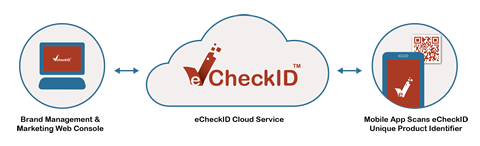

eCheckID mobile product information platform enables consumers to consume with confidence by providing real-time information on authenticity, expiry, allergens, and/or recall status of health sensitive or other consumer packaged products. A simple scan of the eCheckID 2D barcode on the product packaging using the eCheckID app offers consumers immediate access to authenticity and safety information of each unit of product they purchase or consume. Consumers do not have to enter a complex string of alphanumerical characters onto the brands’ web site to determine authenticity, or try to check the holographic sticker or the printing on the packaging to guess the authenticity of a particular unit.
Unlike regular UPC or other marketing oriented 2D bar code, the eCheckID code contains encrypted, hard to counterfeit product identification information that identifies each specific unit of the product. Once scanned, critical up to date information―like safety recall―specific to the unit of product in the consumer’s possession is delivered instantaneously to the consumer’s mobile device. Consumer with certain allergic condition can be warned of the presence of allergens in the product like lactose, tree nuts, glutens, shell fish, etc.
Additional written product information, video or sound recording of usage ideas like recipe, usage direction, or comments from other customers or experts can be delivered directly to the consumer's smart phone or tablet to enhance consumer's appreciation of the product's benefits.
With complex, multi-tier export-import, wholesale, brick and mortar retail and e-commerBrace sales channels, it is difficult, if not impossible, for the brand owner to interact directly with each individual consumer. For consumer products, just knowing who and where the consumers are by itself is an impossible task. In case of high-volume consumer packaged goods like cosmetics or nutritional products, the limited point-of-sale scan data is useless in establishing connection between the brand owner and consumers, and it is certainly not practical to ask consumers to fill out registration post card or a registration form. With the eCheckID app, consumers can easily register their use or ownership of the product. There is no need for consumers to do any more than simply scan the eCheckID code and click the registration button.
By registering through the eCheckID app, consumers can automatically register what stock keeping unit (SKU) of the product and specific unit of product they are using and the place and time they purchase or consume the product. The brand owner can tailor their communication with consumers by suggesting complementary products, offering useful product information, and most importantly, timely alerting consumers to critical safety information that affects the specific unit of product in their possession. For products with known consumption duration, brand owners can even to send a unit to a particular consumer before the product ran out.
For consumers, feedback about the product can be sent to the brand owner from their mobile device without having to look up the SKU from the product packaging and call the customer support line.
Social networking plays a significant role in how consumers perceive and value the functionality and quality of a product. The eCheckID app is integrated with popular social networking sites, such as Facebook and Twitter. Consumers can interact with their friends as well as the brand using these popular social networking sites. If they have a positive experience with a product, they can easily send a Tweet about their experience, or post a "like" on the brand's Facebook page. They could also share new usage ideas with friends or among their peers, and drives up awareness and demand for the product. The eCheckID app makes it very easy for consumers to help generate buzz around a product or a brand. In response, the brand can encourage positive social networking activities, including “liking” a product on Facebook by consumer, through incentives that can be delivered via the eCheckID app.
Besides sending product safety information directly to consumers based on the specific unit of product they purchased, a brand owner can send marketing or promotional messages directly to targeted consumers’ mobile devices. Certainly, there are many ways a brand can communicate with consumers ranging from traditional off-line approaches like print advertising and direct mail, to online techniques like banner ads on popular web sites or search-engine marketing. Unfortunately, most of these approaches simply splatter marketing messages across a wide audience, and cannot be targeted at specific users of the brand's products with certain demographics or characteristics. Furthermore, the marketing messages are delivered through media or personal computers that, unlike the consumers' mobile device, are not with or accessible by the consumers at all times. No wonder that so very few of these messages hit the mark.
Marketing messages delivered through eCheckID goes directly to mobile devices that consumers carry at all times. The messages can also be accurately targeted to actual consumers of a product, or consumers of complementary products. In order words, eCheckID is the marketer's dream―allowing messages to be targeted at the audience ho cares, in the right place, at the right time.
Consumers are not just interested in learning more about the product they consume, they are also interested in programs that help reduce the price of the products they are interested in, and build affinity with the brands they care about. The eCheckID platform also supports brand loyalty program for consumers to earn points and win prizes, rebates or product discount based on their purchases. To earn points, instead of requiring consumers to mail the receipt and part of the packaging to a service agent, or register and enter a string of alphanumeric characters on a web site, a simple scan of the eCheckID code using the eCheckID app will automatically credit them with the correct number of points. Similarly, the brand owner can run a lottery program where consumers enter the lottery by scanning a concealed eCheckID code.